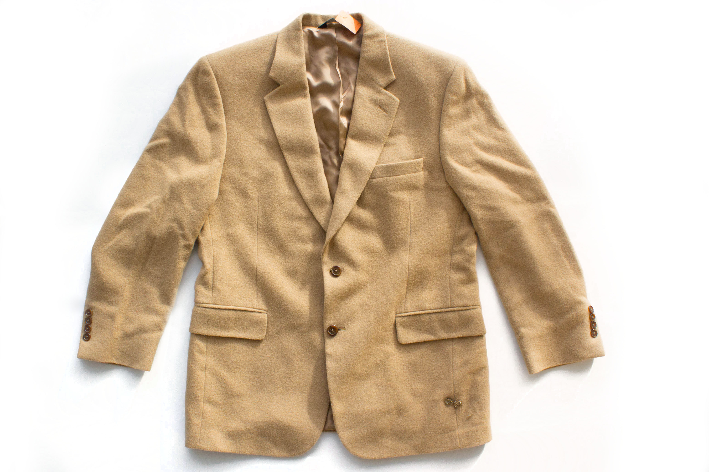

Today marks the end of Yenny’s second week in the Mexican factory. Her back has grown accustomed to the sharp pain that accompanies her rigid, wooden chair. She quietly sews, rising only when granted permission for a quick lunch or brief bathroom break. Her eyes wander to the barren, windowless walls choking her in, wishing she was allowed just a peek into the outside world. No, I have to focus. Yenny’s nimble hands skillfully weave her needle through eight buttons, quickly sewing each one onto the sleeves of a coat. So long as she keeps a strict pace, she keeps her job. Each coat is another five cents towards Yenny’s paycheck. She knows this coat is five more cents towards supporting her thirteen year old daughter, Esperanza.
The air enveloping Yenny clogs her lungs with the dust off old machines and the lint off poorly woven textiles. Sweat drips from the brow of her forehead, nearly hitting the coat she’s working on. She shivers thinking of the beating that might follow had it landed on the coat. She couldn’t afford to ruin her handiwork. Not even another month of pay could afford her that coat. Yenny’s hand slips and she squeaks, “Ouch!” as she pricks herself with the needle. Callous has begun building on her fingers from all the pricks. The callous is a relief to Yenny, who knows it would cost her the job if ever she haphazardly spilled her blood onto a coat.
Late into the night, Yenny dreams of owning a house, Esperanza having the opportunity for higher education, or even leaving Mexico altogether. As she sits, mind numbingly sewing buttons and fantasizing of a new life, a man comes running from the east side of the factory yelling “Fuego! Corren pa fuera!” Yenny’s mind snaps back to the present. The factory is on fire. Yenny follows the frightened crowd towards the emergency exits, only to find them locked. The fire swiftly spreads throughout the building, leaving the air with nothing but soot and ashes. She feels a panic overtake her body as she tries to keep out invading smoke with the collar of her shirt. The crowd bangs on the doors with the hope they may be released from the flaming inferno. As Yenny’s consciousness slowly fades, all she can think of is her daughter. What will Esperanza do without her? She hears a siren in the distance as her limp body falls to the factory floor.
Yenny wakes up to find herself lying on the dirt lot outside. A paramedic sits over her, pumping her chest. “Uno, dos, tres, quatro-” Yenny shoots up and gasps for breath, shocked by a stinging night air. A relieved Esperanza tightly embraces her mother. Tears stream down Esperanza’s cheeks as she explains that help was sent the moment people saw the smoke. Yenny tightly embraces her daughter and glances down at her hand to find she is clenching the two buttons she nearly lost her life sewing.